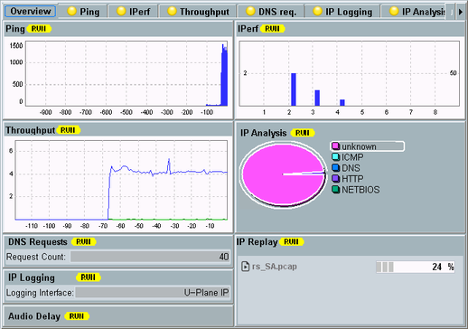

Overview Tab
The tab provides an overview of the DAU measurements, including the state of each measurement and selected measurement results.

Measurements - Overview tab
Each area shows the state and selected measurement results of the corresponding measurement.
For details about the measurements, refer to the following sections: